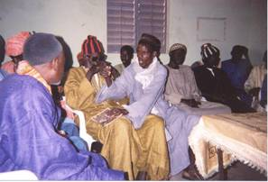

<!DOCTYPE HTML PUBLIC "-//W3C//DTD HTML 4.01 Transitional//EN">

<html>
<head>
<meta content="Cormas, Cirad, gestion des ressources naturelles, natural resource management, INRM, environnement, environment, simulation, modelisation, modelling, SMA, MAS, multi-agent, smalltalk, visualworks, logiciel, software" name="KeyWords"/>
<title>Le jeu de rôles SelfCormas</title>
<meta content="text/html; charset=utf-8" http-equiv="Content-Type"/>
<!--#include virtual="/include/script.inc" -->
<link --="" href="/css/cormas.css" rel="stylesheet"/>
<style>
        body, html {
            margin: 0;
            padding: 0;
            font-family: Arial, sans-serif;
            overflow-x: hidden;
        }
        .container {
            display: flex;
            flex-direction: column;
            margin-left: 180px;
            width: calc(100% - 180px);
        }
        .header-container {
            height: 80px;
            width: 100vw;
            background-color: #FFA500;
            position: relative;
            margin-left: 0;
            left: 0;
            right: 0;
            z-index: 1001;
            display: flex;
            justify-content: center;
        }
        .header-image-container {
            display: flex;
            justify-content: center;
            align-items: center;
            height: 100%;
        }
        .header-image-container img {
            max-width: 100%;
            max-height: 100%;
            object-fit: contain;
        }
        #sidebar {
            position: fixed;
            top: 0;
            left: 0;
            width: 180px;
            height: 100%;
            background-color: #FFCC99;
            padding: 20px;
            z-index: 1000;
            box-sizing: border-box;
        }
        #sidebar ul {
            list-style-type: disc;
            margin-left: 20px;
            padding: 0;
        }
        #sidebar ul li a {
            display: block;
            text-align: left;
            color: #333;
            background-color: #FFCC99;
            padding: 10px 0;
        }
        #sidebar ul li a:hover {
            background-color: #C86D12;
        }
        table {
            width: 100%;
            margin-left: 20px;
        }
        tbody td {
            padding-left: 30px;
        }
        tbody td.content-cell {
            padding-left: 80px;
        }
        </style></head>
<body bgcolor="#FFFFFF" border="0" leftmargin="0" marginheight="0" marginwidth="0" onload="MM_preloadImages('/images/fr/accueil_r.gif','/images/fr/demarche_r.gif','/images/fr/logiciel_r.gif','/images/fr/applications_r.gif','/images/fr/biblio_r.gif','/images/fr/formation_r.gif','/images/fr/reseaux_r.gif')" topmargin="0"><div class="header-container" style="width: 100vw; background-color: #FFA500; position: relative; margin-left: 0; left: 0; right: 0; z-index: 1001; height: 80px; display: flex; justify-content: center;"><div class="header-image-container" style="display: flex; justify-content: center; align-items: center; height: 100%;"></div></div><div class="container">
<!--#include virtual="haut.inc" -->
<!-- -- -- -- -- -- -- -- Corner -- -- -- -- -- -- -- -- -- -- -- --><td bgcolor="#FFFFFF" valign="top" width="25"></td><table border="0" cellpadding="0" cellspacing="0" width="100%">
<tr>
<!--#include virtual="sommair.inc" -->
<td bgcolor="#FFFFFF" valign="top" width="*">
<p>  
      <h1 align="right"><font color="#777777">SelfCormas, un jeu de rôles à propos de l'organisation 
        décentraliséede l'utilisation des sols au Nord du Sénégal </font><br/></h1>
<h1 align="right"><font color="#777777"><font size="3">P. d'Aquino, A. Bah, F. Bousquet, C. Le Page</font></font><br/></h1>
<h2> </h2>
<h2>Motivation 
        de la création</h2>
<p>Des conflits (parfois violents) liés à l'usage des terres et à l'accès 
        aux ressources entre agriculture et élevage surviennent de temps à autres 
        au sein des villages de la vallée du fleuve Sénégal. Dans le cadre de 
        la mise en œuvre d'un plan d'occupation et d'aménagement des sols de la 
        vallée, une équipe pluri institutionnelle de recherche a proposé aux conseils 
        ruraux d'organiser dans des villages des ateliers au cours desquels la 
        technique du jeu de rôles serait utilisée comme un outil de co-conception 
        d'un modèle. L'objectif est d'aboutir à une représentation partagée des 
        interactions entre agriculture et élevage.</p>
<h2>Description et spécificités </h2>
<p>En amont du jeu, une première journée permet d'identifier et de caractériser 
        selon les dires des acteurs les ressources et l'espace autour du village, 
        les différents types d'usage pratiqués, les critères de satisfaction pour 
        chaque type d'usage retenu, et enfin les règles comportementales auxquelles 
        ils se réfèrent pour prendre leurs décisions. Le jeu proprement dit se 
        déroule le lendemain. Une carte schématisant le territoire autour du village 
        est fixée au mur. L'animateur invite tour à tour chaque joueur à venir 
        placer sur cette carte un post-it symbolisant son activité. L'animateur 
        vérifie que ces choix sont en concordance avec les règles collectivement 
        définies la veille. Le cas échéant, il interpelle directement le joueur 
        qui produirait une action remettant en cause une de ces règles. Selon 
        un principe de validation adaptative et collective, une règle peut être 
        modifiée, supprimée ou ajoutée au cours du jeu, si l'ensemble des joueurs 
        s'accorde pour valider cette modification, suppression ou ajout. </p>
<h2>Mise en œuvre </h2>
<p>Un premier test a été réalisé en français avec les membres du conseil 
        rural, à l'invitation du chercheur. Une vidéo a été réalisée à cette occasion. 
        Deux autres tests en langue locale ont réuni à chaque fois une quinzaine 
        de villageois, à l'invitation du conseil rural.</p>
<h2>Références </h2>
<ul>
<li>D'Aquino P., Le Page C., Bousquet F. et Bah A. (2002) Une expérience 
          de conception directe de SIG et de SMA par les acteurs dans la vallée 
          du Sénégal. Revue internationale de Géomatique 12(4): 517-542. </li>
<li>D'Aquino P., Le Page C., Bousquet F. and Bah A. (2003) Using self-designed 
          role-playing games and a multi-agent system to empower a local decision-making 
          process for land use management: The SelfCormas experiment in Senegal. 
          <a href="http://jasss.soc.surrey.ac.uk/6/3/5.html">Journal of Artificial 
          Societies and Social Simulation, 6(3)</a> </li>
</ul>
<p>Pour en savoir plus, <a href="mailto:daquino@cirad.fr">contactez l'auteur</a>.</p>
<!--#include virtual="/include/copyright_fr.inc" --> </p></td>
<td bgcolor="#FFFFFF" valign="top" width="15">
<div align="right" class="texte"></div>
</td>
</tr>
</table>
</div><div id="sidebar" style="background-color: #FFCC99; position: fixed; top: 0; left: 0; width: 180px; height: 100%; padding: 20px; z-index: 1000; box-sizing: border-box;"><br/><br/><br/><br/><br/><br/><br/><br/><br/><ul><li><a href="../../index.htm">Accueil</a></li><li><a href="../demarch/demarch.htm">Approche</a></li><li><a href="../outil/outil.htm">Cormas soft</a></li><li><a href="../applica/applica.htm">Modèles</a></li><li><a href="../bibliog/article.htm">Publications</a></li><li><a href="../formati/formati.htm">Formations</a></li><li><a href="../reseaux/reseaux.htm">Réseaux</a></li></ul></div></body>
</html>
